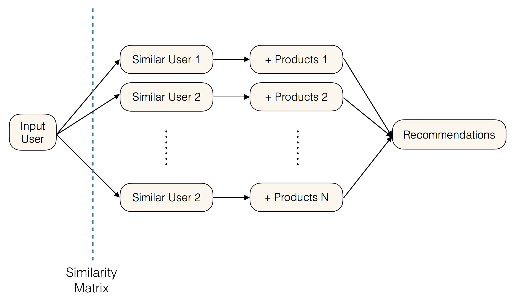

Rekindling Your
Inner Reader:
A Recommendation System for the Amazon Kindle Store
BEGINTeam SOLA
Sarah Mohamed, Omar Abboud, Laura Ware, & Anthony Soroka
Overview & Motivation
Introduction
The Netflix Challenge, which completed in 2009, sparked significant research interest in
recommendation systems based on user ratings and reviews. Rather than movies, we present and
evaluate methods for recommending another favorite pasttime: books. Illustrating the significance
of this research, the Amazon Kindle market alone rivals that of Netflix by size ($5bn vs. $6bn).
In our study, we recommend Kindle books to users reliably and efficiently, through analyzing
Amazon Kindle Store review data to understand what types of users correlate strongest with
groups of products.
The Netflix Challenge also provides useful context and motivation for this project, as the Kindle data is both more sparse and less varied. As the following pie graphs demonstrate, ratings are disproportionately skewed towards the 4 and 5-star ratings categories, re-emphasizing the need for product and user behaviour-based approaches to recommendation.

Datasets
The following datasets were consulted in the preparation of this report:
- Amazon Kindle Store Ratings and Reviews: Includes ~1 million records of ratings, with complete review text, timestamp, product ID, rating out of 5 and user ID for each review. The dataset is automatically filtered to only include users that have reviewed at least five products, and products that have at been reviewed at least five times each.
- Amazon Kindle Store Product Metadata: Includes ~500,000 records of product, with the name, product ID, description, price, category, and items that were also bought and also viewed for each recorded product.
Project Features
Our project proposes the following two categories of analysis:
- Recommend a list of books based on a user’s rating and review history
- Predict a user’s 5-star rating for any book


Data Exploration and Visualization
This carousel cycles through primary observations learned through the data exploration phase of the project; namely, understanding the distribution of review frequencies across users, quantifying the relationship between ratings and review helpfulness, and other summary metrics.


50 Shades of Amazon
Loving Romance: Social Implications
Incredibly 18% of the MetaData products are Romance novels, yet 51% of the Reviews came from these Romance novels.

Beyond the realms of our project, this potentially highlights an alarming social trend that people are investing heavily in entertainment. Specifically in the chart to the right, we see relative to the variety of products that the Kindle store offers the only subjects that are overrepesented are Romance, Mystery, Science Fiction, Horror, and Erotica. On the contrary, the most underrepresented subjects are History, Math, Technology, Politics and Business.
Impact on Ratings Predictions
Below illustrates (% of Reviews) / (% of MetaData Products).

The fact that the majority of the Review data are from a single genre makes surpassing Baseline Rating Predictions models more difficult. Specifically, our Ratings Prediction systems do not particularly benefit from determining what genres the user likes. Instead our model needs to determine, within the user's genre of choice, what differentiates a great book from a good book from the user's perspective.
Recommending Previously Unseen Books
This section describes methods pertaining to previously unseen book recommendations given an input user. This model is constructed using a hybrid model of two recommendation modules described below in detail: user-based and item-based collaborative filtering. The intersection set of books outputted by both models form the final recommendations, and are ordered by their overall popularity in the dataset by average review.
Method 1: User-based Collaborative Filtering
The user-based collaborative filtering model inputs a user ID and identifies that user’s position in a similarity matrix comprising 5000 randomly sampled users from the original universe of Amazon kindle reviewers. Matrix entries correspond to the scores users assigned to products, and for a given input user, the model calculates the user-row’s cosine similarity to all other rows in the matrix. Finally, with the given user’s most similar users on hand, the model recommends items liked by those users for final consideration.
This is done by filtering products of the most similar users to those that were positively reviewed by that user. The intersection set of liked products across all similar users is outputted to the input user for recommendation. What is important to note is that the list is unordered, as the final recommendation list is ordered after hybridization is completed.
Method 2: Item-based Network Filtering
The item-based collaborative filtering model begins with the products that were most liked by an input user. These products are then cross-referenced with all products from the meta-dataset that were either also bought or also viewed with those products. Finally, this new "universe of products" is filtered by those that, on average, were positively reviewed across all users.
The products from this final set that have not already been reviewed by the user are outputted for final recommendation.

Hybrid Model
The hybrid model outputs the intersection of the book lists generated by each model and orders them by their average score in the total dataset of Amazon kindle reviews, comprising almost 1,000,000 reviews.
One evident drawback of this hybrid model is that the intersection output, shown in the graph below in yellow, is quite small. We can understand from this histogram that the recommendation sets outputted from the user-based collaborative filtering model are generally smaller than those outputted by the item-based filtering model, indicating that the intersection set is primarily limited in size by the user similarity matrix, which currently only supports 5,000 users due to computational intensity. Strategies to circumvent this drawback and further improve the quality of the final intersection set are mentioned in the conclusions section below.
Another important opportunity to recognize is that of integrating the two methods more conceptually, as opposed to simply taking the final intersection set. For example, for products in the universe of a user's positively reviewed products according to the metadata, items can be filtered by positive reviews from users most similar to the input user according to the similarity matrix, as opposed to the entire dataset.

Select a Reading Profile
We recommend that you take a look at some of these books:
We recommend that you take a look at some of these books:

We recommend that you take a look at some of these books:
Predicting Ratings: Overview
Methods Considered
Root-Mean-Square-Deviation (RSME) is our main performance metric defined as per below:
The following four approaches were used for Ratings Prediction for a given User-Iterm pair.
- Simple Average: Baseline models using a combination of Train Data's Total Population Avg., Item Avg., and User Avg. Rating
- Ratings-based User-based collaborative filtering: Predicts user ratings based on the ratings of similar users, where similarity is based on ratings history
- Review-based User-based collaborative filtering: Predicts user ratings based on the ratings of similar users, where similarity is based on review text
- Matrix Factorization: Finds latent features by factorizing user-item matrix
We improved upon the Baseline Constant Average Predict model of .89 with an ensemble collaborative filtering model that led to a RMSE of .73. Of note, the Simple Averaging model produced an impressive RMSE of .75. Difficulty to improve upon this method is due to the data's low variance and high sparsity. The Kindle data is in fact 51x less-filled (more sparse) than the Netflix Data.
Results

Illustrated below, for most users there are only received 5 reviews, making improvement on averaging models difficult
Predicting Ratings Methods: Simple Averaging
Constant Prediction: Train Total Average
The initial baseline is to simply predict the average of all the train data ratings. For the total population, the Average Kindle Rating was a very high 4.4 (in comparison, Netflix's average rating was 3.7). This simple method already achieves a low RMSE of .89 (as illustrated below). Note, for the Netflix challenge, teams were trying to achieve an RMSE of .855. This again illustrates the lack of variance within this data.
Weighted Average: Item and User Avg. Rating
An improved baseline is to use a weighted sum of Item and User Average Rating. The below graph shows that the User Avg. Rating is more valuable than the Item Avg. Rating. Specifically, the optimal combination of the two ratings is 20% Item Avg. and 80% User Avg. This method achieves an RMSE of .75. Logically, given low variance of data and sparsity of data, surpassing this already low baseline is quite difficult.

Predicting Ratings Methods: Matrix Factorization
Overview
Our goal is to turn the user-item matrix R as per below:
Into a completely filled predictions matrix R̂ as per below:
By finding feature matrices P and Q to lead to: R≈P*QT=R̂
Stochastic Gradient Descent
But how do we find P and Q? We do this through Stochastic Gradient Descent (SGD). We initialize P and Q to essentially randomized values. Once initialized, we have a prediction matrix R̂ (equation i). With predictions we can determine error values for every train data user-item pair (equation ii). We then amend P and Q in the direction to reduce error for every train user-item pair (equations iii and iv).
This process requires fixing the below parameters.

We used a grid search to find optimal values for these parameters.
Implementation
The below illustrates the improving RMSE from SGD.
- Non-Library Implementation: Test RMSE of .80
- GraphLab Library: Test RMSE of .76
- Combine SimpAvg and MF: Test RMSE of .74 (below graph shows Matrix Factorization weight of .3, SimpAvg weight of .7 was optimal)
Image Source: Img 1 and 2, Img 3
Predicting Ratings Methods: User-based Collaborative Filtering
Traditional User-based Collaborative Filtering
In addition to using user-based collaborative filtering for generating recommendations, it can also be used to predict a user's rating for any book. The basic idea of this approach is that for a given user, the model will find similar users and use the ratings of the similar users to predict the rating of the first user.

Image Source: Collaborative Filtering
For this model, a dataset of approximately 1000 frequent reviewers was used. For each of these users, a similarity matrix was generated to represent the similarity between each pair of user. Similarity was calculated by taking the cosine similarity of each user's vector of ratings for all books. Finally, in order to calculate the predicted rating for a given user and book, the average rating for that user across all books was added to a normalized average of all other users' ratings for the given book, weighted by the similarity of the user. In this way, users that are most similar have the most significant influence on the prediction.
User-based Collaborative Filtering with Text Analysis
This approach is identical to user-based collaborative filtering, except that rather than calculating user-to-user similarity from rating history, it was calculated from review text. The following process was used to complete the text analysis:- The dataset was grouped by user, and for each user, text from all reviews was combined into one block of text.
- A count vectorizer (defined below) was used to extract counts of all words in each block of text. A list of standard English stop words was used to remove very common words and prepositions from the text.
- Text was cleaned of all html entities.
- The result of the above is a "utility matrix" of users vs. word counts.
- Next, the TF-IDF score (defined below) was calculated for each word, such that the word counts in the utility matrix were updated with these scores.
- The cosine similarity between each pair of users was calculated using their vectors of TF-IDF scores.
Methods for Determining Text Attributes
Count Vectorizer: Converts text from each review into a matrix of word counts.
Term Frequency (TF): The frequency of a word in a document. Usually this log form is used.
Inverse Document Frequency:The inverse of the document frequency -- that is, the ratio of total documents/items to the number of items where some attribute is present. Usually the log of this ratio is used.
TF-IDF: The term frequency multipled by the inverse document frequency. Overall this represents how often a word was used by user, and how unique that word is - indicating how significant it is that a given word appeared in a user's set of reviews.
Select a Review Below to Find Similar Users
See examples of our text-based similarity approach.
"This ebook is so steamy. It is hot to the touch. It had a little bit of romance at the end which was a pleasant surprise."
"While I enjoyed reading this one, I found myself skipping parts that seemed "wordy" and drawn out. There's an excellent story to it but one has to dig for it.This has to be the best of Ms. Livingston's, yet. The story is so well written that one forgets the time period it depicts.
"The editing could be better but the story is so so romantic. I didn't want to put it down. A beautiful story."
Your review most closely matches the following users, who wrote these reviews:
"This ebook is hot to the touch, and it has a romance story to it. This is a series and hard to read just one."
"This is a hot to the touch steamy read with a little romance in it. It has a good plot and good characters in it."
"This is a steamy romance story with lots of steam. The steam this story is hot to the touch. I enjoyed reading this ebook."
Your review most closely matches the following users, who wrote these reviews:
"Grace Livingston Hill always has a great story line. She was a wonderful author. I love the way she brings in the need for faith in our lives. what a great story, Grace Livingston Hill is my heroine. I love the simple, clean story-line."
"Reading this book makes me happy, sometimes the author does get a bit too wordy, but the story is so intense and the characters so well written that you don't really care."
"Books by Grace Livingston Hill are always great to reat. Phoebe Deane is no exception. A wonderful inspiring story. I have read most of Grace's books more than once and enjoy them each time I read them. Try one."
Your review most closely matches the following users, who wrote these reviews:
"Great story, very romantic and lots of good scenario. Strong heroin traits which I really enjoy. Could do with better editing and spelling corrections."
"These are good books, some editing needs to be done but over all there good. The story is interesting and the characters are fun to get to know."
"This is a :) very good book sweet and romantic I do wish the ending was better and it was longer but I did enjoy this book."
Conclusions & Future Work
Conclusions
Improving on Simple Averaging for Kindle Ratings Predictions proved difficult. After investigating a range of models such as collaborative filtering and matrix factorization, we lowered RMSE by 3% from the Simple Averaging baseline. However the Netflix Challenge helps us frame the significance of this improvement: Netflix waited 3 years and paid $1mm for a 10% improvement from a model that was not much better than Simple Averaging. Considering the sparsity of the dataset and the less-variability in ratings, difficulty in improving on RMSE is understandable.
While less quantifiably measurable, item recommendations proved more fruitful. Relying on item metadata and user-based collaborative filtering to make recommendations, we found considerable overlap among recommendations found using either strategy. While the user-based recommendation model was able to leverage common user opinions based on product ratings, the item-based model examined a the broader universe of available products. The intersection of these two strategies balances similarity based on reviews as well as the user’s broader genre preferences.
To evaluate the efficacy of the two strategies, we must consider the trade-off between the model’s ability to recommend novel items, and our ability to evaluate model performance. While the accuracy of the Simple Averaging model is easily quantifiable, the collaborative filtering methods are not.
Future Work
Computational efficiency: The Amazon Kindle dataset encodes information for ~62,000 users and ~68,000 products. Due to memory and processing constraints, some of our present models sample a subset of this information (between 1k-10k of the total users depending on the model). Baseline Averaging Models and Matrix Factorization were completed using the full dataset by converting data into sparse matrix representations. However when comparing methodologies we used the same data subset, to insure our comparisons were valid. For future research, improving our computational efficiency through data structures suited for sparse data would be valuable.
Machine Learning Approach: Another interesting approach to this problem is a machine learning based approach. This chapter on recommender systems suggests a technique involving creating decision trees for each user, in which the predictors are attributes of the item as shown in the below diagram. In our case, we could use book attributes from the metadata dataset as the predictors.
References
[1] Image-based recommendations on styles and substitutes J. McAuley, C. Targett, J. Shi, A. van den Hengel SIGIR, 2015
[2] Inferring networks of substitutable and complementary products J. McAuley, R. Pandey, J. Leskovec Knowledge Discovery and Data Mining, 2015
[3] The BellKor Solution to the Netflix Grand Prize Y. Koren. 2008.
[4] Mining of Massive Datasets. J. Leskovec, A. Rajaraman, J. Ullman. Cambridge University Press, 2014